#!/usr/bin/python
import SocketServer
class EchoRequestHandler(SocketServer.BaseRequestHandler):
def handle(self):
while 1:
data = self.request.recv(1024)
print data + "\n"
self.request.send("1")
return
SocketServer.TCPServer.allow_reuse_address = 1
server = SocketServer.ThreadingTCPServer(("0.0.0.0", 80), EchoRequestHandler)
server.serve_forever()
Game Over: FlareOn 2015 CTF > Challenge 5
Hola everyone! I had some sleepless nights recently participating in this year's FireEye FLARE On CTF. Unfortunately I bombed on Challenge 9 due to a lack of free time, a lack of sleep and a lack of 0xc0ff33. All jokes aside, it was a great journey and I learned a ton of new stuff. A big thanks to the whole FLARE team for putting this together! This post will is a write-up of Challenge 5. I chose this challenge for a few reasons: (1) it is not very complicated, (2) it has a malware-ish component to it and (3) it was pretty enjoyable!
Ok, strap-in and let's get to it!
Mmm Wizard Indeed..
So we get the following mail which gives some indication as to where the challenge is going.
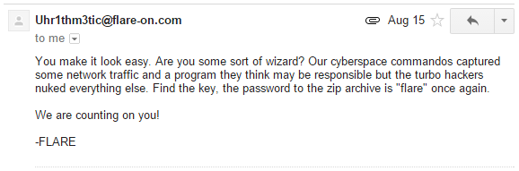
I was kind of hoping that there would be JavaScript obfuscation involved but that was not the case. The attached archive contained two files: "challenge.pcap" and a 32bit PE called "sender".
challenge.pcap
First let's have a look at the traffic capture and rip out anything we may need so we can put the pcap aside. A closer inspection shows that the pcap contains 12 HTTP POST requests.
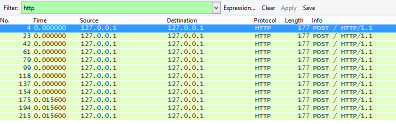
They all have the same size and they seem pretty small which is encouraging. The image below shows the request and response for the last POST request.
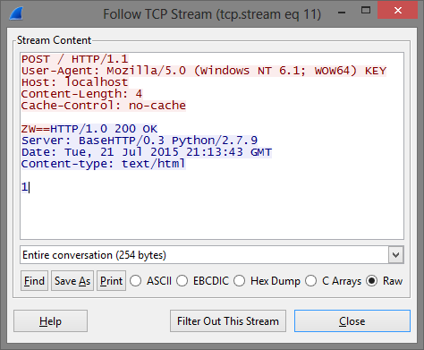
The format of each request is the same, the binary sends 4 characters to the listener which responds by sending "1". The reason I showed the last request is that we can see the 4 characters include two equal signs. Immediately, that screams base64. Additionally, since the equal signs are in the last request, that gives us a pretty good indication that the binary sent the data in the correct order.
Extracting all transmitted characters gives us the following base64 string.
UDYs1D7bNmdE1o3g5ms1V6RrYCVvODJF1DpxKTxAJ9xuZW==
Of course this does not actually decode to anything sensible, that would be way to boring!
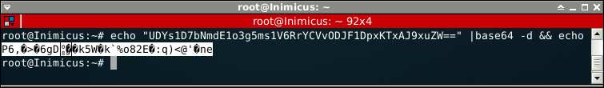
Why you so fail?
A quick look at the operands in IDA shows some strings that point at fail conditions.
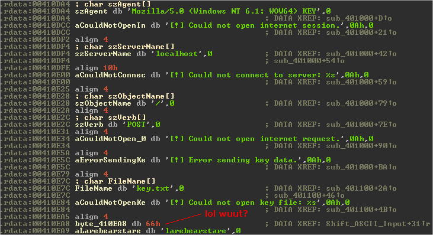
From looking at these strings and using what we saw in the pcap we can easily figure out what the binary needs to function properly. At the very least it requires key.txt to exist (presumably it is reading the contents into a buffer) and a listener on the localhost to receive the HTTP POST requests. From the pcap we know that the server is supposed to return "1" for whatever it receives. Also notice the strange string "flarebearstare" (0x66 = f), we will come back to that later.
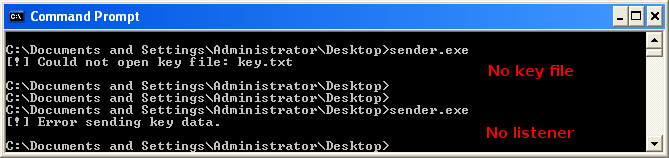
We can quickly put together a simple python listener, this will also be useful when debugging as we don't want to keep branching into fail conditions.
After creating key.txt with some sample text "AAAABBBB" we receive the following response.
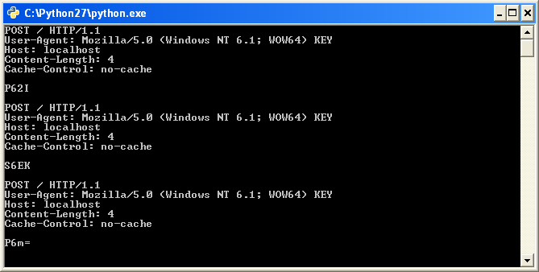
Bingo, now let's see if we can figure out what is happening with the input buffer when it is processed by the binary.
Modifying The Input
Right after the binary reads in the text from key.txt it hits the following assembly instruction blocks.
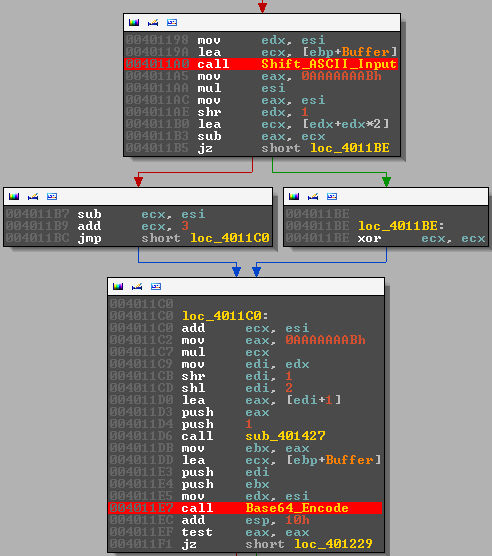
The important parts here are the two function calls for which I set a breakpoint (FYI I renamed these functions). These two functions are responsible for modifying the input we pass to the program. We will look through both of them in turn.
Shift_ASCII_Input
The function is pretty small, you can see it in it's entirety below.
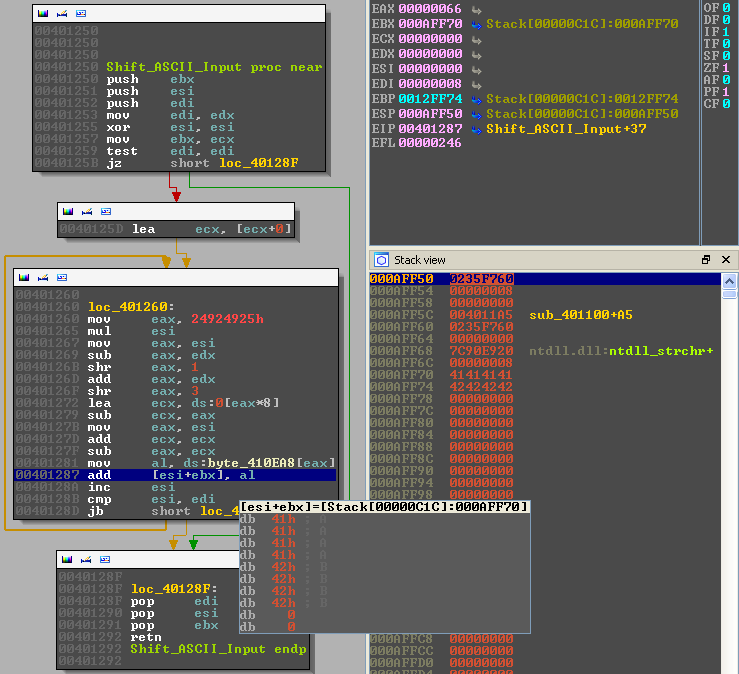
In the image above, I have paused execution on the most relevant part. EBX points at our test buffer ("AAAABBBB") and it seems like the first byte of our buffer 0x41 (A) is being incremented by 0x66 (f). Remember that strange operand we found we found earlier?
Some quick investigation shows the following:
EBX: Points at the start of our buffer. We can also see it on the stack.
ESI: A counter, it increments each time the loop runs and it is used as an index for our input buffer.
EDI: Contains the length of our buffer, it is compared to ESI to determine when to exit the loop.
AL : Contains a single byte from the string "flarebearstare", each iteration of the loop this value is
shifted to the right.
Essentially, what happens is that each character of our input buffer is incremented by a character from the string "flarebearstare". This effectively scrambles whatever input we give the binary. Notice that the length of the key is 14 characters, if we provide the program input which is longer than they key it will simple loop around and start from the first character again.
The following example, using our sample input buffer, should hopefully illustrate this:
Input : 0x41(A) 0x41(A) 0x41(A) 0x41(A) 0x42(B) 0x42(B) 0x42(B) 0x42(B) # Sample input "AAAABBBB" Key : 0x66(f) 0x6c(l) 0x61(a) 0x72(r) 0x65(e) 0x62(b) 0x65(e) 0x61(a) + # Key "flarebea" --------------------------------------------------------------- Scrambled: 0xA7(?) 0xAD(?) 0xA2(?) 0xB3(?) 0xA7(?) 0xA4(?) 0xA7(?) 0xA3(?) # Output
We can easily confirm this by following the EBX register while stepping through the loop. Our input buffer changes from this:
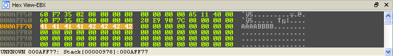
To this:
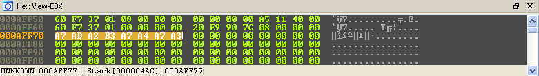
That's it for the first part, let's move on to the base64.
Base64_Encode
The second function that modifies our input "presumably" converts bytes directly to base64. What happens, in general terms, is that every three bytes (any kind of bytes) are converted into 4 ASCII printable bytes. When the input bytes are not divisible by three then padding is applied. The conversion process happens by turning every three bytes into binary, grouping the resulting bits into 6-bit groups and then using the decimal representation of those bytes look up the corresponding character in a base64 table. The standard base64 lookup table can be seen below.
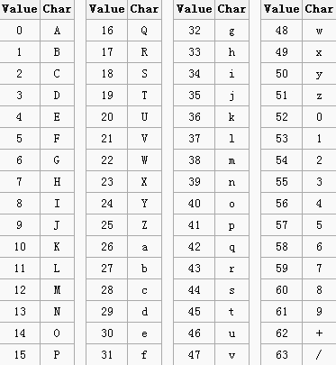
I know I know, it sound like I just made that up but that's really how base64 works. Let's give that a try for the first three bytes of our modified input buffer:
Input : A7 AD A2 8-bit binary : 10100111 10101101 10100010 6-bit split : 101001 111010 110110 100010 Decimal : 41 58 54 34 base64 Lookup: p 6 2 i ----> p62i
The base64 function is a bit lengthy, to simplify things, the image below shows breakpoints on the last step in the conversion process (decimal --> base64 lookup table). There are, naturally, 4 breakpoints; one for each lookup.
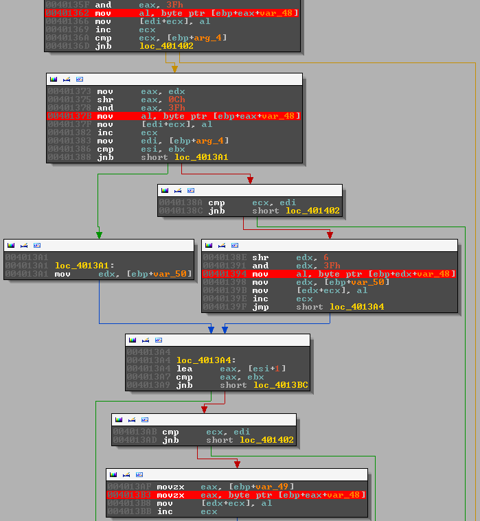
We already know what should happen but let's have a look what the binary is doing.
The first character:
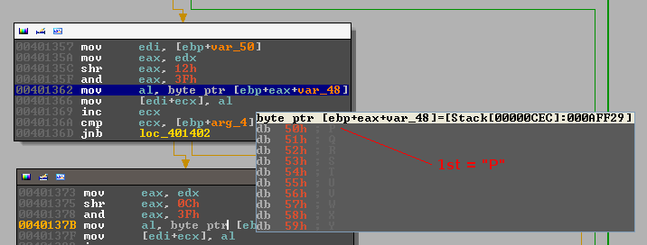
The second character:
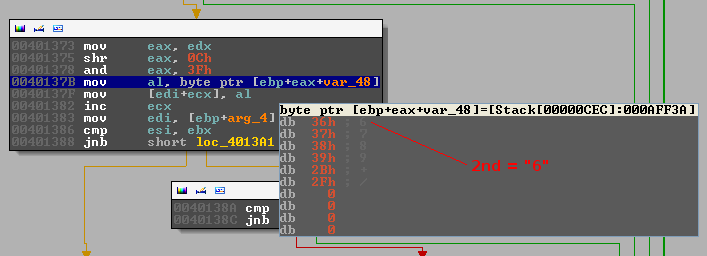
The third character:
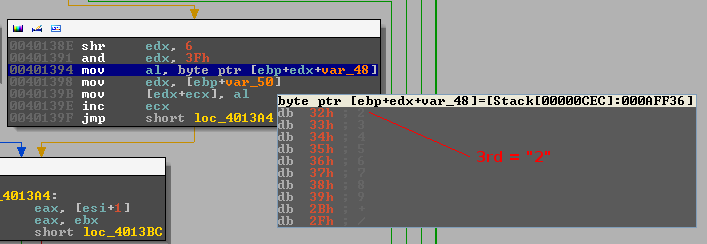
The forth character:
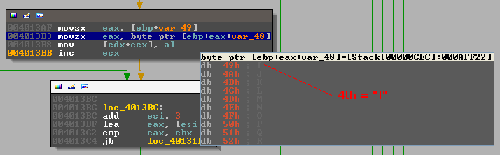
There is obviously something sinister going on here, the base64 looks fine but ... the case is inverted ("p62i" vs "P62I"). Remember the base64 lookup table, the binary has one too, only the order of the upper and lower case characters is inverted. During the execution of the base64 function the lookup table can be seen on the stack.
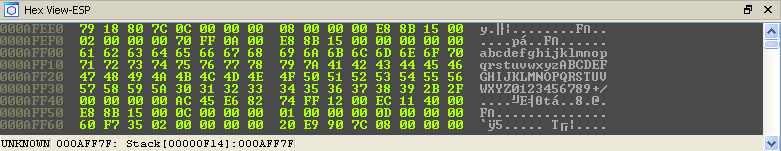
Mystery solved, we have all the info that we need to solve the challenge. All the remainder of the binary does is split the base64 up into chunks and send it to the listener.
Solution
Obviously, I have been explaining this challenge is some detail but the truth is that it was all a bit more chaotic when I first solved it. So ... I could write a nice python script which converts the base64 back to the original input but I'll show you what a lazy person (ie: me) might do when trying to rush to the finish line hehe.
First lets convert the base64 back into the correct bytes, keeping the modified lookup table in mind:
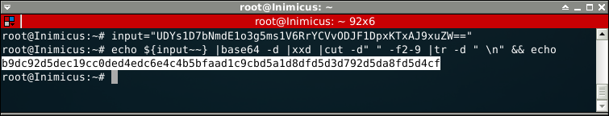
We can let the binary do the rest of the hard work for us without having to put too much effort into it. Remember, the initial ASCII bytes are encoded using the following instruction add [ESI+EBX], al. If we supply the binary with the bytes we just decoded and patch that instruction to sub [ESI+EBX], al then it should just spit out the solution!
First we restart the binary and continue execution until we reach the aforementioned instruction:
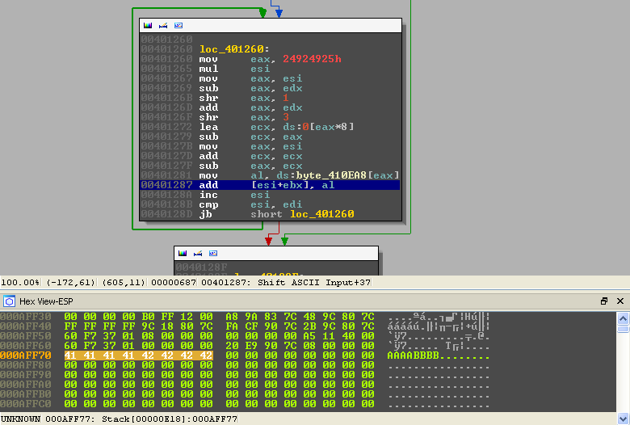
We then patch the instruction and replace the bytes in memory with the bytes we decoded from the base64.
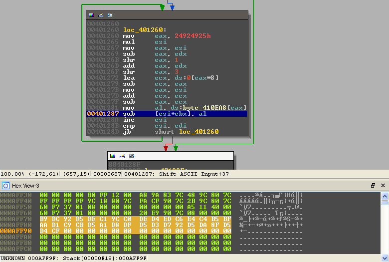
All that remains is to run the loop and watch the solution decode in memory!
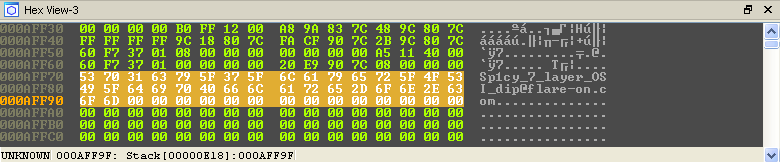
Game Over!